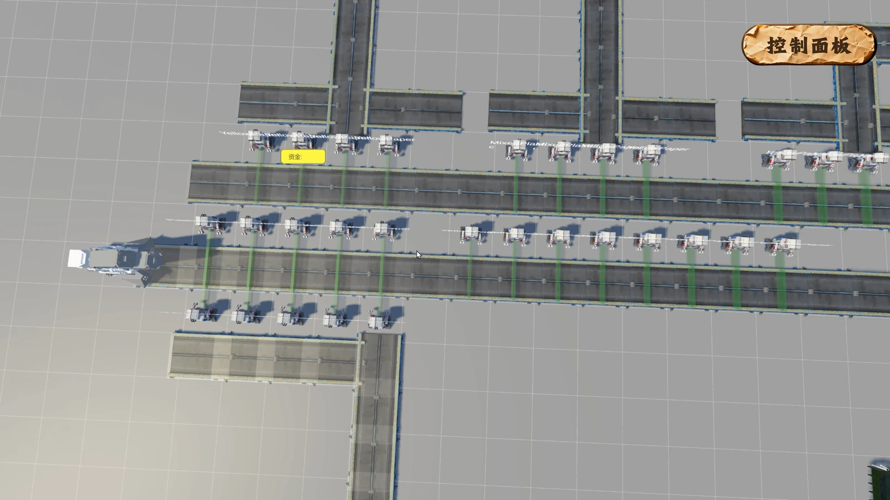
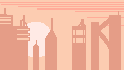
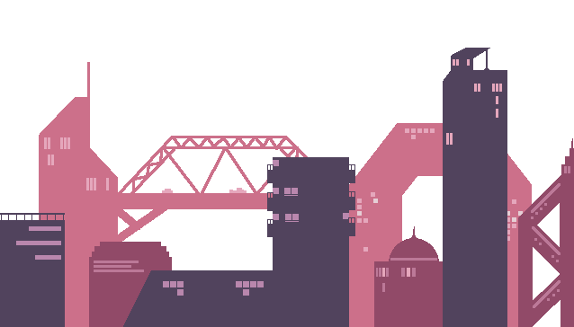
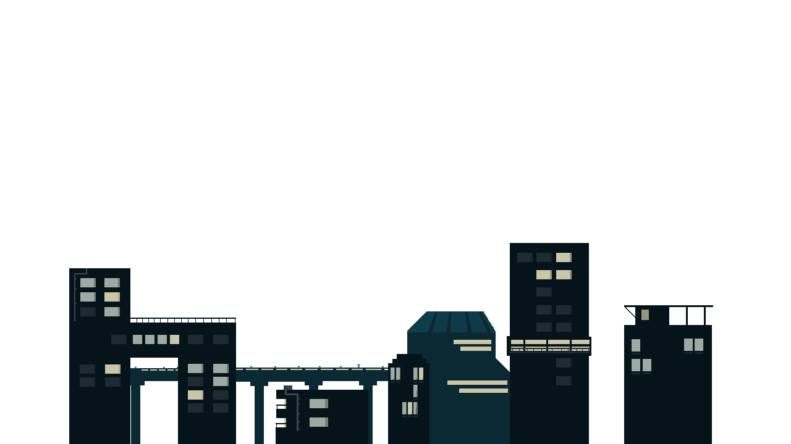
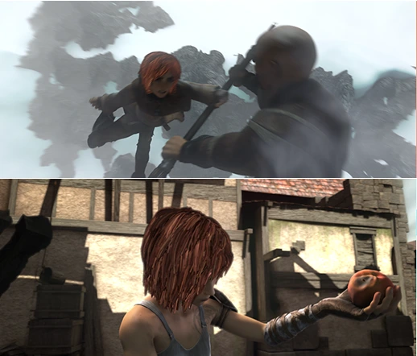
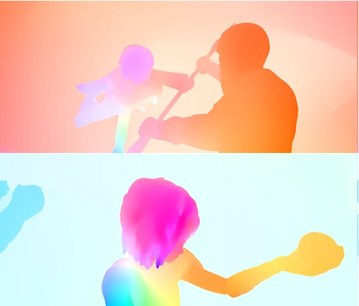
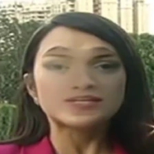
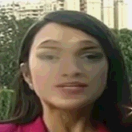
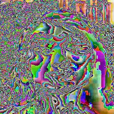

01 — INFORMATION DESIGN
代谢拓扑Metabolic Topology
让日常习惯，长成一个可见的生态。
信息可视化交互叙事前端原型
显示全部 7 个项目
让不可见的体验，有形可感。SENSE & EXPRESSION
3 WORKS让复杂的关系，变成亲手可试的规则。RULES & INTERACTION
2 WORKS
TEAM PROJECT / 4把回收链条，变成能亲手调整的产线。



把后坐力，变成移动的可能。
追问机器看见了什么，以及为什么。COMPUTATIONAL VISION
2 WORKS

让语义特征，进入几何匹配。



用不同分支，观察结构与细节。
我习惯先拆开一个问题，再找到合适的表达方式：让数据有形，让规则可玩，让实验中的发现与局限都被看见。
这些探索连接着我对交互、视觉表达和技术实现的兴趣，也持续为更完整的设计项目提供新的工具与视角。